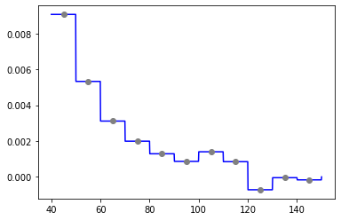
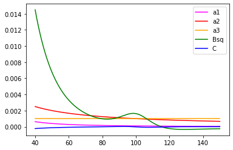
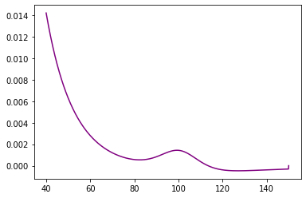
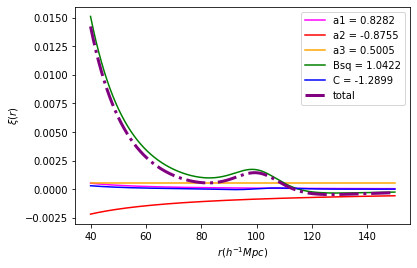

[50]:
import os
import numpy as np
#%matplotlib inline
import matplotlib.pyplot as plt
plt.ion()
%load_ext autoreload
%autoreload 2
import nbodykit
import Corrfunc
from Corrfunc.mocks.DDsmu_mocks import DDsmu_mocks
from Corrfunc.utils import compute_amps
from Corrfunc.utils import evaluate_xi
from Corrfunc.bases import bao
The autoreload extension is already loaded. To reload it, use:
%reload_ext autoreload
Tophat on mock data¶
Set up parameters¶
Here we use a low-density lognormal simulation box.
[72]:
boxsize = 750
nbar_str = '3e-4'
proj_type = 'tophat'
rmin = 40
rmax = 150
nbins = 11
mumax = 1.0
seed = 10
#weight_type='pair_product'
weight_type=None
[73]:
rbins = np.linspace(rmin, rmax, nbins+1)
rcont = np.linspace(rmin, rmax, 1000)
cat_tag = '_L{}_nbar{}'.format(boxsize, nbar_str)
cat_dir = '../byebyebias/catalogs/cats_lognormal{}'.format(cat_tag)
cosmo = 1 #doesn't matter bc passing cz, but required
nthreads = 24
nmubins = 1
verbose = False
Load in data and randoms¶
[74]:
# data
datasky_fn = '{}/catsky_lognormal{}_seed{}.dat'.format(cat_dir, cat_tag, seed)
datasky = np.loadtxt(datasky_fn)
ra, dec, z = datasky.T
nd = datasky.shape[0]
#weights = np.full(nd, 0.5)
weights = None
[75]:
# randoms
randsky_fn = '{}/randsky{}_10x.dat'.format(cat_dir, cat_tag)
randomsky = np.loadtxt(randsky_fn)
ra_rand, dec_rand, z_rand = randomsky.T
nr = randomsky.shape[0]
#weights_rand = np.full(nr, 0.5)
weights_rand = None
Perform xi(s, mu) continous estimation¶
[6]:
# projection
dd_res_corrfunc, dd_proj, _ = DDsmu_mocks(1, cosmo, nthreads, mumax, nmubins, rbins, ra, dec, z,
is_comoving_dist=True, proj_type=proj_type, nprojbins=nbins, verbose=verbose,
weights1=weights, weight_type=weight_type)
dr_res_corrfunc, dr_proj, _ = DDsmu_mocks(0, cosmo, nthreads, mumax, nmubins, rbins,
ra, dec, z, RA2=ra_rand, DEC2=dec_rand, CZ2=z_rand,
is_comoving_dist=True, proj_type=proj_type, nprojbins=nbins, verbose=verbose,
weights1=weights, weights2=weights_rand, weight_type=weight_type)
rr_res_corrfunc, rr_proj, qq_proj = DDsmu_mocks(1, cosmo, nthreads, mumax, nmubins, rbins, ra_rand, dec_rand, z_rand,
is_comoving_dist=True, proj_type=proj_type, nprojbins=nbins, verbose=verbose,
weights1=weights_rand, weight_type=weight_type)
Applying projection requires fallback method, switching instruction set
Applying projection requires fallback method, switching instruction set
Applying projection requires fallback method, switching instruction set
[7]:
amps = compute_amps(nbins, nd, nd, nr, nr, dd_proj, dr_proj, dr_proj, rr_proj, qq_proj)
xi_proj = evaluate_xi(nbins, amps, len(rcont), rcont, len(rbins)-1, rbins, proj_type)
Computing amplitudes (Corrfunc/utils)
Evaluating xi (Corrfunc/utils)
Perform xi(s, mu) standard estimation¶
[8]:
def extract_counts(res, weight_type=None):
counts = np.array([x[4] for x in res], dtype=float)
if weight_type:
weights = np.array([x[5] for x in res], dtype=float)
counts *= weights
return counts
[9]:
# standard
proj_type = None
dd_res_corrfunc, _, _ = DDsmu_mocks(1, cosmo, nthreads, mumax, nmubins, rbins, ra, dec, z,
is_comoving_dist=True, proj_type=proj_type, nprojbins=nbins, verbose=verbose,
weights1=weights, weight_type=weight_type)
dd = extract_counts(dd_res_corrfunc, weight_type)
dr_res_corrfunc, _, _ = DDsmu_mocks(0, cosmo, nthreads, mumax, nmubins, rbins,
ra, dec, z, RA2=ra_rand, DEC2=dec_rand, CZ2=z_rand,
is_comoving_dist=True, proj_type=proj_type, nprojbins=nbins, verbose=verbose,
weights1=weights, weights2=weights_rand, weight_type=weight_type)
dr = extract_counts(dr_res_corrfunc, weight_type)
rr_res_corrfunc, _, _ = DDsmu_mocks(1, cosmo, nthreads, mumax, nmubins, rbins, ra_rand, dec_rand, z_rand,
is_comoving_dist=True, proj_type=proj_type, nprojbins=nbins, verbose=verbose,
weights1=weights_rand, weight_type=weight_type)
rr = extract_counts(rr_res_corrfunc, weight_type)
[10]:
fN = float(nr)/float(nd)
xi_ls = (dd * fN**2 - 2*dr * fN + rr)/rr
print("Standard L-S:")
print(xi_ls)
Standard L-S:
[ 9.07367349e-03 5.33148599e-03 3.11653563e-03 1.99330937e-03
1.29004106e-03 8.66130331e-04 1.40126093e-03 8.48817853e-04
-7.20140405e-04 -4.56320418e-05 -1.67193339e-04]
[11]:
rbins_avg = 0.5*(rbins[1:]+rbins[:-1])
plt.plot(rcont, xi_proj, color='blue')
plt.plot(rbins_avg, xi_ls, marker='o', color='grey', ls='None')
[11]:
[<matplotlib.lines.Line2D at 0x7f11007110f0>]

BAO on mock data¶
[109]:
proj_type = 'generalr'
projfn = 'bao.dat'
# The spline routine writes to file, so remember to delete later
kwargs = {'cosmo_base':nbodykit.cosmology.Planck15, 'redshift':0}
nprojbins, _ = bao.write_bases(rbins[0], rbins[-1], projfn, **kwargs)
alpha_model: 1.02
dalpha: 0.005099999999999882
alpha_model: 1.02
Check out basis functions (normalized):
[110]:
base_colors = ['magenta', 'red', 'orange', 'green', 'blue']
base_names = ['a1', 'a2', 'a3', 'Bsq', 'C']
bases = np.loadtxt(projfn)
bases.shape
r = bases[:,0]
for i in range(len(bases[0])-1):
#norm = np.mean(bases[:,i])
base = bases[:,i+1]
plt.plot(r, base, color=base_colors[i], label='{}'.format(base_names[i]))
plt.legend()
[110]:
<matplotlib.legend.Legend at 0x7f226995f8d0>

[111]:
_, dd_proj, _ = DDsmu_mocks(1, cosmo, nthreads, mumax, nmubins, rbins, ra, dec, z,
is_comoving_dist=True, proj_type=proj_type, nprojbins=nprojbins, projfn=projfn,
verbose=verbose, weights1=weights, weight_type=weight_type)
_, dr_proj, _ = DDsmu_mocks(0, cosmo, nthreads, mumax, nmubins, rbins,
ra, dec, z, RA2=ra_rand, DEC2=dec_rand, CZ2=z_rand,
is_comoving_dist=True, proj_type=proj_type, nprojbins=nprojbins, projfn=projfn, verbose=verbose,
weights1=weights, weights2=weights_rand, weight_type=weight_type)
_, rr_proj, qq_proj = DDsmu_mocks(1, cosmo, nthreads, mumax, nmubins, rbins, ra_rand, dec_rand, z_rand,
is_comoving_dist=True, proj_type=proj_type, nprojbins=nprojbins, projfn=projfn, verbose=verbose,
weights1=weights_rand, weight_type=weight_type)
Applying projection requires fallback method, switching instruction set
Reading in projection file, bao.dat...
Read in 1000 by 6 basis data
Applying projection requires fallback method, switching instruction set
Reading in projection file, bao.dat...
Read in 1000 by 6 basis data
Applying projection requires fallback method, switching instruction set
Reading in projection file, bao.dat...
Read in 1000 by 6 basis data
[112]:
amps = compute_amps(nprojbins, nd, nd, nr, nr, dd_proj, dr_proj, dr_proj, rr_proj, qq_proj)
print("amplitudes:",amps)
xi_proj = evaluate_xi(nprojbins, amps, len(rcont), rcont, len(rbins)-1, rbins, proj_type, projfn=projfn)
Computing amplitudes (Corrfunc/utils)
amplitudes: [ 0.828212 -0.87549388 0.50047871 1.04219122 -1.28994913]
Evaluating xi (Corrfunc/utils)
Reading in projection file, bao.dat...
Read in 1000 by 6 basis data
[113]:
rbins_avg = 0.5*(rbins[1:]+rbins[:-1])
plt.plot(rcont, xi_proj, color='purple')
#plt.plot(rbins_avg, xi_ls, marker='o', color='grey', ls='None')
[113]:
[<matplotlib.lines.Line2D at 0x7f22698e7208>]

[114]:
total = np.zeros(len(bases))
for i in range(0, bases.shape[1]-1):
ampbase = amps[i]*bases[:,i+1]
total += ampbase
plt.plot(rcont, ampbase, color=base_colors[i], label='{} = {:.4f}'.format(base_names[i], amps[i]))
plt.plot(r, total, color='purple', label='total', lw=3, ls='-.')
plt.xlabel(r'$r (h^{-1}Mpc)$')
plt.ylabel(r'$\xi(r)$')
plt.legend()
[114]:
<matplotlib.legend.Legend at 0x7f226984de48>

[96]:
os.remove(projfn)
[19]:
#!jupyter nbconvert --to script example.ipynb